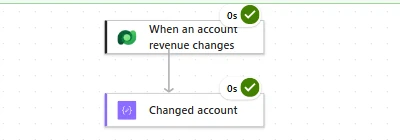

- Power Automate
- Level 3 · Triggers and connectors · 2 of 7
Dataverse triggers and row actions
The Dataverse trigger When a row is added, modified or deleted starts a flow as soon as data changes, with no polling delay. Its power is in two optional boxes that most people leave empty: Select columns and Filter rows. Used well, they stop the flow from running for changes it does not care about.
The demo trigger
| Setting | Demo value | Effect |
|---|---|---|
| Change type | Modified | Only updates, not new or deleted rows |
| Table name | Accounts | Which table to watch |
| Scope | Organization | Rows owned by anyone, not just me |
| Select columns | revenue | Only run when revenue is part of the update |
| Filter rows | revenue gt 100000 | Only run when the new revenue is over 100,000 |
What happened


concat(triggerOutputs()?['body/name'], ' revenue is now ', string(triggerOutputs()?['body/revenue']))| Piece | What it does |
|---|---|
triggerOutputs()?['body/name'] | A column from the row that changed. Every column of the row is available. |
triggerOutputs()?['body/revenue'] | The new value of revenue. |
Changing the city of the same account, or setting revenue to 50,000, does nothing: the first fails Select columns, the second fails Filter rows.
Row actions you will use
| Action | Use it to |
|---|---|
| List rows | Query many rows (Level 2, OData article) |
| Get a row by ID | Read one row when you know its ID, for example a related row |
| Add a new row | Create a row |
| Update a row | Change some columns of a row |
| Relate rows | Link two rows through a relationship |
New to this? Start from the basics optional
Webhook trigger: Dataverse tells Power Automate about a change immediately, instead of Power Automate checking on a schedule.
Scope: whose rows count: User (mine), Business unit, Parent: child business unit, or Organization (everyone).
triggerOutputs(): the data the trigger received. For this trigger, body holds the row.
Build it step by step optional
- Create an Automated cloud flow with the trigger When a row is added, modified or deleted (Microsoft Dataverse).
- Set Change type Modified, Table name Accounts, Scope Organization.
- Open Show all, set Select columns
revenueand Filter rowsrevenue gt 100000. - Add a Compose with the concat expression above. Save.
- In a model-driven app or the Dataverse table editor, change an account's revenue to 150,000. Open the flow's run history.
- Now change the same account's city only. No new run appears, which is the point.
Common mistakes
- Leaving Select columns empty on a Modified trigger. Every save of every account starts a run.
- Using display names in Select columns or Filter rows. Both need logical names, like
revenueoraddress1_city. - Expecting it to fire in an environment in administration mode. Triggers don't fire while admin mode is on.